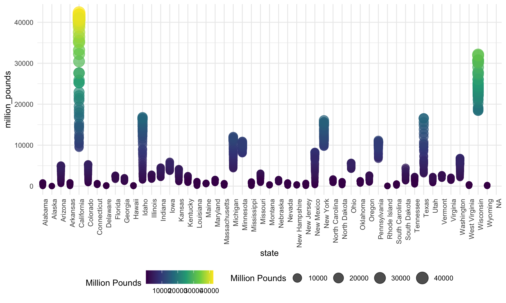
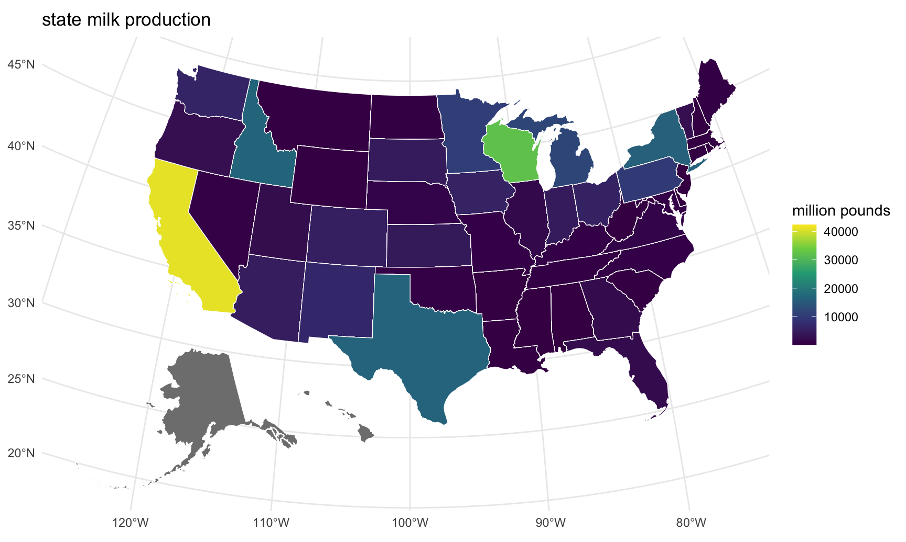
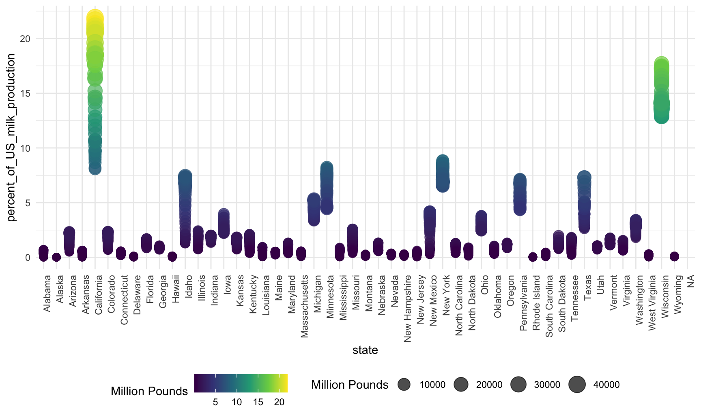
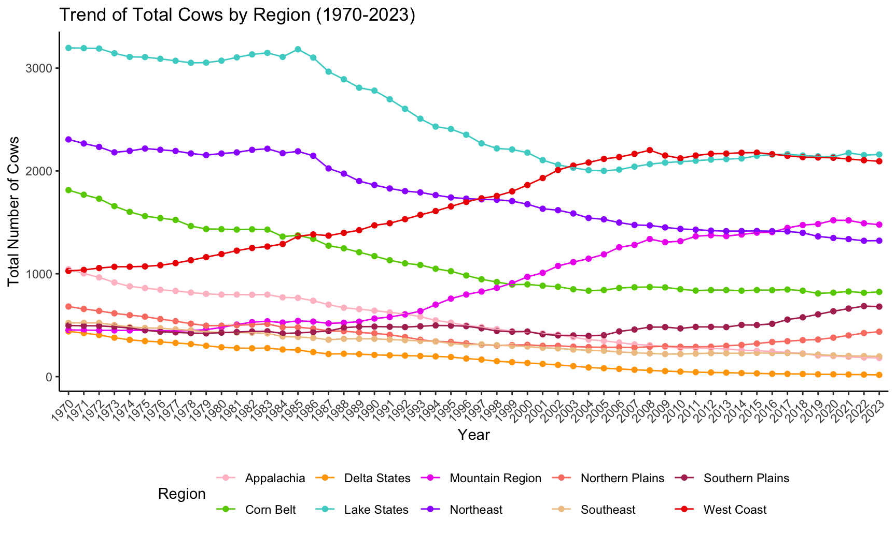

#load packages
library(tidyverse)
library(ggridges)
library(patchwork)
library(purrr)
library(broom)
library(readxl)
library(ggplot2)
library(sf)
library(usmap)
#R figure settings
knitr::opts_chunk$set(
fig.width = 9,
fig.asp = .6,
out.width = "90%"
)
theme_set(theme_minimal() + theme(legend.position = "bottom"))
options(
ggplot2.continuous.colour = "viridis",
ggplot2.continuous.fill = "viridis"
)
scale_colour_discrete = scale_colour_viridis_d
scale_fill_discrete = scale_fill_viridis_dmilk_cows = readxl::read_excel("./data/milkcowsandprod.xlsx", sheet="Milk cows", skip=1,col_names = TRUE) |>
janitor::clean_names() |>
#drop_na() |>
rename(region = x1) |>
rename(state = back_to_content_page) |>
filter_all(any_vars(!is.na(.))) |>
rename_with(~ gsub("^x", "", .), starts_with("x")) |>
mutate(region = case_when(
state %in% c("Maine", "New Hampshire", "Vermont", "Massachusetts", "Rhode Island",
"Connecticut", "New York", "New Jersey", "Pennsylvania",
"Delaware", "Maryland") ~ "Northeast",
state %in% c("Michigan","Wisconsin","Minnesota") ~ "Lake States",
state %in% c("Ohio","Indiana","Illinois","Iowa","Missouri") ~ "Corn Belt",
state %in% c("North Dakota", "South Dakota", "Nebraska", "Kansas") ~ "Northern Plains",
state %in% c("Virginia", "West Virginia", "North Carolina", "Kentucky", "Tennessee") ~ "Appalachia",
state %in% c("South Carolina", "Georgia", "Florida", "Alabama") ~ "Southeast",
state %in% c("Mississippi", "Arkansas","Louisiana") ~ "Delta States",
state %in% c("Oklahoma","Texas") ~ "Southern Plains",
state %in% c("Montana","Idaho","Wyoming","Colorado","New Mexico","Arizona","Utah","Nevada") ~ "Mountain Region",
state %in% c("Washington","Oregon","California") ~ "West Coast",
state %in% c("Alaska","Hawaii") ~ "Other States"
#TRUE ~ "Other" # Default case for states not in the Northeast
)) |>
filter(!is.na(state))## New names:
## • `` -> `...1`milk_production = readxl::read_excel("./data/milkcowsandprod.xlsx", sheet="Milk production", skip=1,col_names = TRUE) |>
janitor::clean_names() |>
#drop_na() |>
rename(region = x1) |>
rename(state = back_to_content_page) |>
#filter_all(any_vars(!is.na(.))) |>
rename_with(~ gsub("^x", "", .), starts_with("x")) |>
rename("1970_million_pounds" = "1970","1971_million_pounds" = "1971","1972_million_pounds" = "1972","1973_million_pounds" = "1973","1974_million_pounds" = "1974","1975_million_pounds" = "1975","1976_million_pounds" = "1976","1977_million_pounds" = "1977","1978_million_pounds" = "1978","1979_million_pounds" = "1979","1980_million_pounds" = "1980","1981_million_pounds" = "1981","1982_million_pounds" = "1982","1983_million_pounds" = "1983","1984_million_pounds" = "1984","1985_million_pounds" = "1985","1986_million_pounds" = "1986","1987_million_pounds" = "1987","1988_million_pounds" = "1988","1989_million_pounds" = "1989","1990_million_pounds" = "1990","1991_million_pounds" = "1991","1992_million_pounds" = "1992","1993_million_pounds" = "1993","1994_million_pounds" = "1994","1995_million_pounds" = "1995","1996_million_pounds" = "1996","1997_million_pounds" = "1997","1998_million_pounds" = "1998","1999_million_pounds" = "1999","2000_million_pounds" = "2000","2001_million_pounds" = "2001","2002_million_pounds" = "2002","2003_million_pounds" = "2003","2004_million_pounds" = "2004","2005_million_pounds" = "2005","2006_million_pounds" = "2006","2007_million_pounds" = "2007","2008_million_pounds" = "2008","2009_million_pounds" = "2009","2010_million_pounds" = "2010","2011_million_pounds" = "2011","2012_million_pounds" = "2012","2013_million_pounds" = "2013","2014_million_pounds" = "2014","2015_million_pounds" = "2015","2016_million_pounds" = "2016","2017_million_pounds" = "2017","2018_million_pounds" = "2018","2019_million_pounds" = "2019","2020_million_pounds" = "2020","2021_million_pounds" = "2021","2022_million_pounds" = "2022","2023_million_pounds" = "2023",
"1970_percent_of_US_milk_production"="4","1971_percent_of_US_milk_production"="6","1972_percent_of_US_milk_production"="8","1973_percent_of_US_milk_production"="10","1974_percent_of_US_milk_production"="12","1975_percent_of_US_milk_production"="14","1976_percent_of_US_milk_production"="16","1977_percent_of_US_milk_production"="18","1978_percent_of_US_milk_production"="20","1979_percent_of_US_milk_production"="22","1980_percent_of_US_milk_production"="24","1981_percent_of_US_milk_production"="26","1982_percent_of_US_milk_production"="28","1983_percent_of_US_milk_production"="30","1984_percent_of_US_milk_production"="32","1985_percent_of_US_milk_production"="34","1986_percent_of_US_milk_production"="36","1987_percent_of_US_milk_production"="38","1988_percent_of_US_milk_production"="40","1989_percent_of_US_milk_production"="42","1990_percent_of_US_milk_production"="44","1991_percent_of_US_milk_production"="46","1992_percent_of_US_milk_production"="48","1993_percent_of_US_milk_production"="50","1994_percent_of_US_milk_production"="52","1995_percent_of_US_milk_production"="54","1996_percent_of_US_milk_production"="56","1997_percent_of_US_milk_production"="58","1998_percent_of_US_milk_production"="60","1999_percent_of_US_milk_production"="62","2000_percent_of_US_milk_production"="64","2001_percent_of_US_milk_production"="66","2002_percent_of_US_milk_production"="68","2003_percent_of_US_milk_production"="70","2004_percent_of_US_milk_production"="72","2005_percent_of_US_milk_production"="74","2006_percent_of_US_milk_production"="76","2007_percent_of_US_milk_production"="78","2008_percent_of_US_milk_production"="80","2009_percent_of_US_milk_production"="82","2010_percent_of_US_milk_production"="84","2011_percent_of_US_milk_production"="86","2012_percent_of_US_milk_production"="88","2013_percent_of_US_milk_production"="90","2014_percent_of_US_milk_production"="92","2015_percent_of_US_milk_production"="94","2016_percent_of_US_milk_production"="96","2017_percent_of_US_milk_production"="98","2018_percent_of_US_milk_production"="100","2019_percent_of_US_milk_production"="102","2020_percent_of_US_milk_production"="104","2021_percent_of_US_milk_production"="106","2022_percent_of_US_milk_production"="108","2023_percent_of_US_milk_production"="110") |>
mutate(region = case_when(
state %in% c("Maine", "New Hampshire", "Vermont", "Massachusetts", "Rhode Island",
"Connecticut", "New York", "New Jersey", "Pennsylvania",
"Delaware", "Maryland") ~ "Northeast",
state %in% c("Michigan","Wisconsin","Minnesota") ~ "Lake States",
state %in% c("Ohio","Indiana","Illinois","Iowa","Missouri") ~ "Corn Belt",
state %in% c("North Dakota", "South Dakota", "Nebraska", "Kansas") ~ "Northern Plains",
state %in% c("Virginia", "West Virginia", "North Carolina", "Kentucky", "Tennessee") ~ "Appalachia",
state %in% c("South Carolina", "Georgia", "Florida", "Alabama") ~ "Southeast",
state %in% c("Mississippi", "Arkansas","Louisiana") ~ "Delta States",
state %in% c("Oklahoma","Texas") ~ "Southern Plains",
state %in% c("Montana","Idaho","Wyoming","Colorado","New Mexico","Arizona","Utah","Nevada") ~ "Mountain Region",
state %in% c("Washington","Oregon","California") ~ "West Coast",
state %in% c("Alaska","Hawaii") ~ "Other States"
#TRUE ~ "Other" # Default case for states not in the Northeast
)) |>
filter(!is.na(state)) |>
filter(!is.na(region)) |>
mutate(across(
.cols = matches("^\\d{4}_.*"),
.fns = ~ as.numeric(.),
.names = "{.col}"
)) #NAs introduced by coercion## New names:
## • `` -> `...1`
## • `` -> `...4`
## • `` -> `...6`
## • `` -> `...8`
## • `` -> `...10`
## • `` -> `...12`
## • `` -> `...14`
## • `` -> `...16`
## • `` -> `...18`
## • `` -> `...20`
## • `` -> `...22`
## • `` -> `...24`
## • `` -> `...26`
## • `` -> `...28`
## • `` -> `...30`
## • `` -> `...32`
## • `` -> `...34`
## • `` -> `...36`
## • `` -> `...38`
## • `` -> `...40`
## • `` -> `...42`
## • `` -> `...44`
## • `` -> `...46`
## • `` -> `...48`
## • `` -> `...50`
## • `` -> `...52`
## • `` -> `...54`
## • `` -> `...56`
## • `` -> `...58`
## • `` -> `...60`
## • `` -> `...62`
## • `` -> `...64`
## • `` -> `...66`
## • `` -> `...68`
## • `` -> `...70`
## • `` -> `...72`
## • `` -> `...74`
## • `` -> `...76`
## • `` -> `...78`
## • `` -> `...80`
## • `` -> `...82`
## • `` -> `...84`
## • `` -> `...86`
## • `` -> `...88`
## • `` -> `...90`
## • `` -> `...92`
## • `` -> `...94`
## • `` -> `...96`
## • `` -> `...98`
## • `` -> `...100`
## • `` -> `...102`
## • `` -> `...104`
## • `` -> `...106`
## • `` -> `...108`
## • `` -> `...110`## Warning: There were 10 warnings in `mutate()`.
## The first warning was:
## ℹ In argument: `across(...)`.
## Caused by warning:
## ! NAs introduced by coercion
## ℹ Run `dplyr::last_dplyr_warnings()` to see the 9 remaining warnings.data = milk_production
data_million_pounds <- data |>
pivot_longer(
cols = matches("_million_pounds$"),
names_to = "year",
values_to = "million_pounds"
) |>
select(region,state,year,million_pounds) |>
mutate(year = sub("_million_pounds$", "", year))
# pivot for percent_of_US_milk_production columns
data_percent_milk_production <- data |>
pivot_longer(
cols = matches("_percent_of_US_milk_production$"),
names_to = "year",
values_to = "percent_of_US_milk_production"
) |>
select(region,state,year,percent_of_US_milk_production) |>
mutate(year = sub("_percent_of_US_milk_production$", "", year))
# left_join
data_long <- left_join(data_million_pounds, data_percent_milk_production, by = c("region","state","year"))#map coordinates of states
us_states <- usmap::us_map()
#abbreviation for state names
data = data_long |> mutate(
state_abbr = state.abb[match(state, state.name)]
)
#merge location data with production data
combine_data <- us_states |>
left_join(data, by = c("abbr" = "state_abbr"))#plot usa map with produciton values
#ggplot(combine_data) +
# geom_point(aes(fill="million_pounds"), color = "white") +
# theme_minimal()
ggplot(combine_data) +
geom_point(aes(x = state, y = million_pounds, size = million_pounds, color = million_pounds),
alpha = 0.7) +
scale_size_continuous(name = "Million Pounds", range = c(3, 7)) +
scale_color_viridis_c(name = "Million Pounds") +
theme_minimal() +
theme(axis.text.x = element_text(angle = 90, hjust = 1),
legend.position = "bottom") ## Warning: Removed 11 rows containing missing values or values outside the scale range
## (`geom_point()`).
ggplot(combine_data) +
geom_point(aes(x = region, y = million_pounds, size = million_pounds, color = million_pounds),
alpha = 0.7) +
scale_size_continuous(name = "Million Pounds", range = c(3, 7)) +
scale_color_viridis_c(name = "Million Pounds") +
theme_minimal() +
theme(axis.text.x = element_text(angle = 90, hjust = 1),
legend.position = "bottom") ## Warning: Removed 11 rows containing missing values or values outside the scale range
## (`geom_point()`).
##state percent
ggplot(combine_data) +
geom_point(aes(x = state, y = percent_of_US_milk_production, size = million_pounds, color = percent_of_US_milk_production),
alpha = 0.7) +
scale_size_continuous(name = "Million Pounds", range = c(3, 7)) +
scale_color_viridis_c(name = "Million Pounds") +
theme_minimal() +
theme(axis.text.x = element_text(angle = 90, hjust = 1),
legend.position = "bottom") ## Warning: Removed 11 rows containing missing values or values outside the scale range
## (`geom_point()`).
ggplot(combine_data) +
geom_point(aes(x = region, y = percent_of_US_milk_production, size = million_pounds, color = percent_of_US_milk_production),
alpha = 0.7) +
scale_size_continuous(name = "Million Pounds", range = c(3, 7)) +
scale_color_viridis_c(name = "Million Pounds") +
theme_minimal() +
theme(axis.text.x = element_text(angle = 90, hjust = 1),
legend.position = "bottom") ## Warning: Removed 11 rows containing missing values or values outside the scale range
## (`geom_point()`).